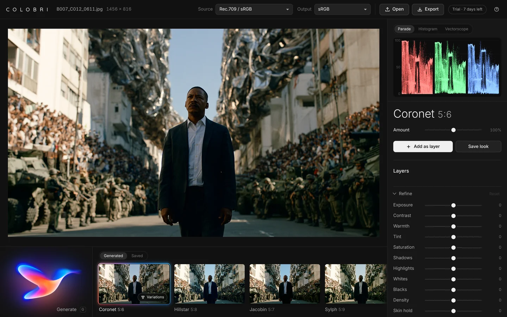
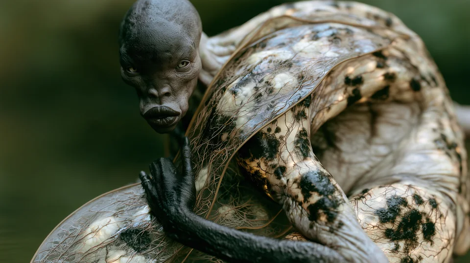
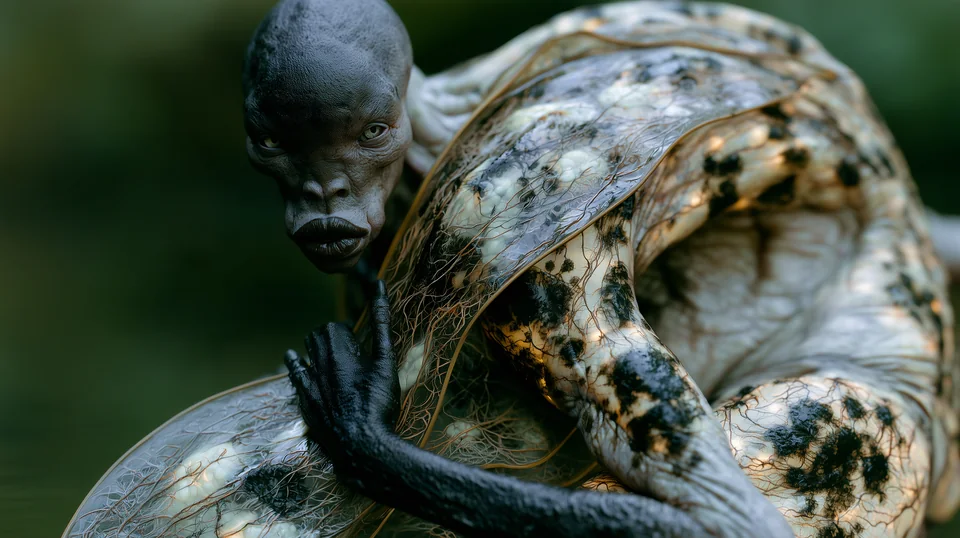
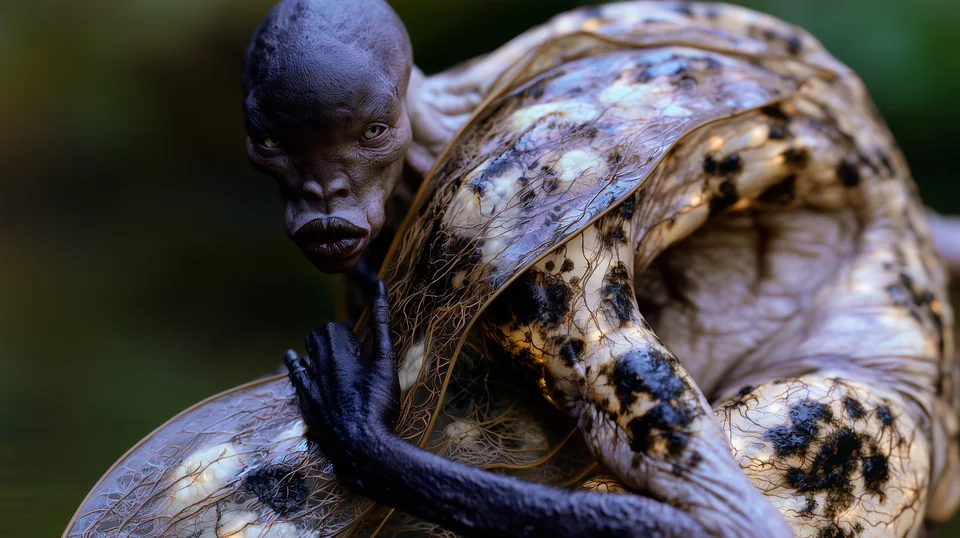

Ten looks, composed for your shot.
Colobri reads your frame and composes ten finished color grades for it in seconds. Not presets: looks made for this shot. Pick one, refine it and put it on your clip in Premiere Pro, DaVinci Resolve, Final Cut Pro or CapCut.
Free for 7 days, then €59 once. No subscription.
One frame, many looks
Press Generate.
Pick your look.
Every press composes ten looks for the frame you open, each from a different family, each solved for its exposure, its black and white and its skin. Here is one frame in seven of them.
Before and after
Composed for the frame.
Not pasted on it.
A preset puts the same numbers on every shot, wherever its blacks sit and however hot its highlights run. Colobri starts from the frame. Drag across it: as shot on the left, Sylph 5:7 on the right.
Not a preset
Presets were made for someone else's shot.
Colobri's looks are made for yours. It measures the frame first, then builds every grade around it, so the look fits before you touch a slider.
| What | Presets and LUT packs | Colobri |
|---|---|---|
| Made for | Someone else's footage, under someone else's light. | The frame you open, measured before a single look is made. |
| Blacks and highlights | Wherever the preset puts them. Shadows crush, skies clip. | Set from your frame's own levels. Nothing crushed, nothing clipped. |
| Skin | Turns with the look. | Held inside healthy skin tones in every look. |
| Finding the look | Scroll through hundreds, then fix the one you chose. | Ten finished looks in seconds, each from a different family. |
| Names | "Cinematic 04". | A hummingbird for the color, then its key and contrast: Sylph 5:8. |
How it works
Three steps.
The first two take seconds.
Open a frame.
A still or a clip: camera log, Rec.709, phone footage or AI-generated. Inside Premiere Pro, DaVinci Resolve or Final Cut Pro, Colobri reads the frame under your playhead.
Press Generate.
Ten looks, each from a different family, composed for that exact frame. Press again for ten new ones. No two presses are alike.
Refine and deliver.
Trim the look the way a colorist would, then export a .cube LUT, a full-resolution still or the graded clip, or put it on the clip in your timeline in one press.

Named after hummingbirds
Every look has a bird and two numbers.
The bird is the look's color. Each one carries that color in its plumage, and a color always gets the same bird, so you come to know them. The numbers are the key and the contrast, with 5 as normal on both.
Hillstar 4:7
- The bird
- HillstarCyan in the shadows. The bird is the color of the look.
- The key
- 4A third of a stop darker. Each step is a third of a stop; 5 is normal.
- The contrast
- 7Punchy. Each step is about 6.5% more or less contrast; 5 is neutral.
- Rubythroatred
- Firecrownember
- Topazamber
- Sungemgold
- Metaltailolive
- Emeraldgreen
- Sylphteal
- Hillstarcyan
- Sapphirewingblue
- Violetearviolet
- Woodstarorchid
- Coronetplum
- Sunangelrose
- Jacobinneutral, punchy
- Hermitneutral, soft
One bird, more and more contrast
One key and contrast, three birds



Graded with Colobri
Every frame on this page.
Each one was graded in Colobri. Point at a frame to see the raw material without the grade.Touch a frame to see the raw material without the grade.
Why Colobri
Built the way a colorist thinks.
- 10looks for every frame, each composed for it, every time you press.
- 65points in the LUT the viewer runs, the same one you export.
- 0frames uploaded. Colobri runs on your device.
- 7days free, with every feature and no card.
Composed for this shot.
Every look is built from your frame: its key, its black and white, the color of its neutrals, where the skin is. Nothing is pasted on top of it.
Nothing crushed, nothing clipped.
Black and white are set from the frame's own levels, so detail that was there stays there. Skin is held inside healthy skin tones in every look.
Film, modelled from data.
Negative and print are built from published characteristic data: spectral sensitivities, curves and dye densities, and every print is timed to grey the way a lab times it. Or work in clean digital.
Refine it like a colorist.
Amount up to 200%, exposure, contrast, warmth, tint, saturation, shadows, highlights, whites, blacks, density and skin hold, trimmed inside the grade, so a correction never fights the look.
Variations that vary.
Ask any look for variations and get a new set, each one a clear move: warmer, cooler, more contrast, softer, richer, lighter, darker. Each is labelled, so you know what you are comparing.
Your footage stays with you.
Frames are never uploaded, so nothing waits on a server, and every look you keep teaches Colobri your taste, on your device too.
Workflow
In your editor.
In your browser.
A panel in Premiere Pro and DaVinci Resolve Studio, an effect in Final Cut Pro, and looks for CapCut. Colobri reads the frame under your playhead and puts the look on your clip, and your editor renders it, in real time and in the final export.
- Panel
Premiere Pro
2025 (25.6) or later, on a Mac or a PC. Adds Lumetri Color to the selected clips and copies the look's LUT, ready to pick under Look.
- Workflow integration
DaVinci Resolve Studio
Version 18 or later, on a Mac or a PC. Puts the look on a node of the clip, its color group or the whole timeline.
- Effect
Final Cut Pro
10.6 or later, on macOS 13 Ventura or later. The look is stored in the clip, so it travels with the library and renders in every export.
- LUT
CapCut
On a Mac or a PC. CapCut takes no plugins, so Colobri saves the look as a LUT for it and shows the three steps that put it on your clip.
- No install
Your browser
On a Mac, a PC, a tablet or a phone. Open a still or a clip and grade it right there, with the same looks and the same exports.
- Reads
- ARRI LogC3 and LogC4, Sony S-Log3, Canon Log 3, Panasonic V-Log, RED Log3G10, Blackmagic Film Gen 5, Apple Log, DaVinci Intermediate, Rec.709 and sRGB, and AI-generated stills and clips.
- Delivers for
- Rec.709 Gamma 2.4, Rec.709-A, sRGB and Display P3. The viewer, the scopes and every export follow your choice.
- Exports
- .cube LUTs at 33 and 65 points and a LUT for CapCut, full-resolution PNG and JPEG stills, and the graded clip. The viewer runs the same 65-point LUT you export, so what you see is what you deliver.
- Scopes
- Parade, histogram and vectorscope, a split compare and one-tap bypass.
- Layers
- Stack looks, and generate new ones on top of the grade you have built.
- Saved looks
- Keep a look with its refinements for any project, with a picture of the shot you saved it on. On a new frame it is fitted to the shot, so the blacks and highlights still hold.
One licence
Pricing
€59once, no subscription
- Colobri in your browser, inside Premiere Pro, DaVinci Resolve Studio and Final Cut Pro, and looks for CapCut
- Every Colobri 1.x version
- For you, on up to two computers, Mac or PC
- Free for 7 days first, with every feature and no card
Both are the free trial. For Mac: Premiere Pro, DaVinci Resolve Studio and Final Cut Pro. For Windows: Premiere Pro and DaVinci Resolve Studio. Each has an installer for each editor; start with Read me first. Rather not install anything? Open Colobri in your browser: the same trial, and the same licence unlocks it.
Checkout opens shortly. Until then, Buy writes to me@davidhjalmarlindberg.com, and you get the link to buy the moment it opens.
The price includes VAT. Checkout is by Lemon Squeezy, our reseller: card, PayPal, Apple Pay or Google Pay. Not for you? Write within 14 days for a full refund. Terms · Privacy
Questions
Good to know.
How does the free trial work?
For 7 days you get every feature, in the browser and in every editor, with no card. After that Colobri still composes and shows looks, and every look you applied stays on your clips, but exporting and applying looks need a licence.
How do I get my licence?
Your key arrives by e-mail the moment you buy. Paste it into Colobri once in each editor and browser you use. Colobri checks it online once, then works offline.
Does my footage leave my computer?
No. Colobri runs on your device, in your browser or in your editor. Frames are never uploaded, so there is no queue and nothing to wait for.
What footage can I grade?
Camera log from ARRI, Sony, Canon, Panasonic, RED, Blackmagic and Apple, DaVinci Intermediate, Rec.709 and sRGB, phone footage, and AI-generated stills and clips. Pick the source and the output once, and the viewer, the scopes and every export follow.
Is the look the same in my editor as in Colobri?
Yes. The viewer runs the same 65-point LUT you export, baked from the same code, and the plugins put exactly that look on your clip. No surprises when it lands in Resolve, Premiere Pro, Final Cut Pro or CapCut.
Does it work with CapCut?
Yes, with CapCut on a Mac or a PC. CapCut takes no plugins, so in Colobri choose Export, then LUT for CapCut: Colobri saves the look as a LUT and shows the three steps that put it on your clip, under Adjustment, LUT, Import. CapCut's phone and web apps take only CapCut's own LUTs.
What do the names mean?
The bird is the look's color, taken from the tint in its shadows (or its highlights, when the shadows are clean): Sylph is teal, Sapphirewing blue, Firecrown ember. Neutral looks are Jacobin when they are punchy and Hermit when they are soft.
The first number is the key: each step is a third of a stop, 5 is normal. The second is the contrast: each step is about 6.5%, 5 is neutral. When two looks in one set would share a name, a third number tells their saturation apart.
Can I use it on more than one computer?
Yes: one licence is for you, on up to two computers, Mac or PC, in the browser and every editor.
What if it is not for me?
Write within 14 days of buying for a full refund.
Your next frame
has ten looks in it.
Runs in your browser. Free for 7 days, then €59 once.